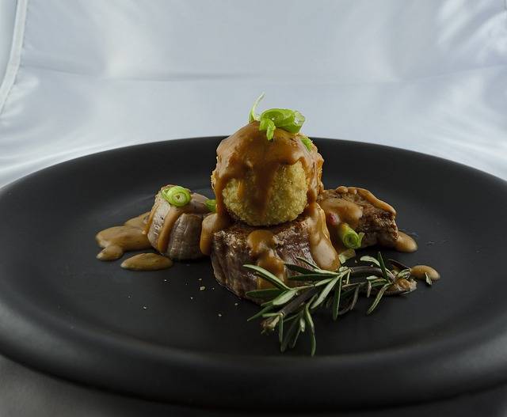

Marinated Grilled Pork Tenderloin

This marinated pork loin cooks up nicely on the grill. It tastes best when marinated for 24 hours.
Ingredients:
Marinade:
- ¼ cup honey
- ¼ cup soy sauce
- ¼ cup oyster sauce
- 2 tablespoons brown sugar
- 4 teaspoons minced fresh ginger root
- 1 tablespoon ketchup
- 1 tablespoon minced garlic
- 1 tablespoon chopped fresh parsley
- ¼ teaspoon onion powder
- ¼ teaspoon cayenne pepper
- ¼ teaspoon ground cinnamon
Pork:
- 2 (12 ounce) pork tenderloins
Steps:
- Make marinade: Whisk together honey, soy sauce, oyster sauce, brown sugar, ginger, ketchup, garlic, parsley, onion powder, cayenne pepper, and cinnamon in a medium bowl;
pour into a resealable plastic bag.
- Place pork tenderloins into the bag;
coat with marinade, squeeze out excess air, and seal the bag.
Marinate in the refrigerator for at least 1 hour or up to 24 hours.
- Preheat the grill for medium heat and lightly oil the grate.
- Remove pork tenderloins from marinade;
shake off excess.
Discard remaining marinade.
- Cook pork tenderloins on the preheated grill until no longer pink in the center, 20 to 30 minutes, turning occasionally.
An instant-read thermometer inserted into the centers should read at least 145 degrees F (63 degrees C).
Homepage
Other recipes:
Classic Italian Pasta Salad
Texas Chili